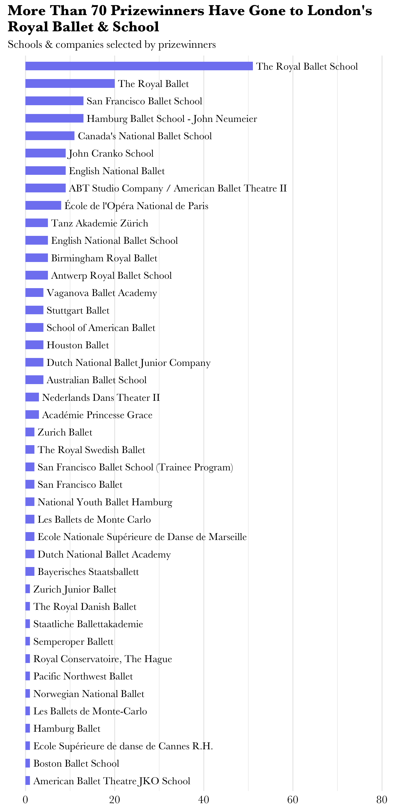

datapointe Data visualizations about ballet The Bunhead's Inflation Indicator: Pointe Shoe Prices Fifty Years of Prix de Lausanne  Ballets I've Watched, 2018-2022 The Path to Becoming a Principal Dancer Youth America Grand Prix Locations & Winners Over Time Exploring Choreographer George Balanchine’s Ballets